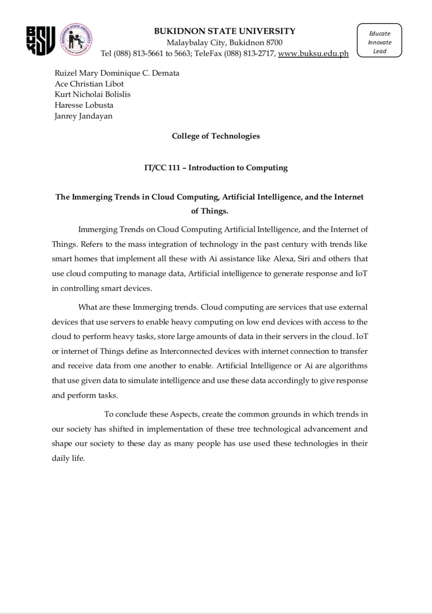

This is my Blog Entries of IT III
Lesson 1: INTRODUCTION TO COMPUTING
Emphasis is on defining and categorizing computers and operating systems, purchasing hardware and software, understanding files and data storage options, exploring computer architecture and understanding digital media.
HERES MY OUTPUT FOR THIS LESSON:
Lesson 2: INFORMATION PROCESSING CYCLE
The sequence of events in processing information, which includes input,processing,storage and output. The input stage can be further broken down into acquisition, data entry and validation. The output stage can also be furthermore divided into interactive queries and routine reports.
Lesson 3: INTRODUCTION TO COMPUTER SYSTEMS
A computer system primarily comprises a central processing unit (CPU), memory, input/output devices and storage devices. All these components function together as a single unit to deliver the desired output. A computer system comes in various forms and sizes.
Lesson 4: BASIC CONCEPT OF COMPUTER SECURITY
Computer security allows to use the computer while keeping it safe from threats. Computer security can be defined as controls that are put in place to provide confidentiality, integrity, and availability for all components of computer systems. These components include data, software, hardware, and firmware.
HERES MY OUTPUT FOR THIS LESSON:
Lesson 5: THE INTERNET AND WORLD WIDE WEB
The internet is, in fact, the biggest network in the world; while the WWW is a collection of documents and other resources that you can browse, or access, through the internet.
HERES MY OUTPUT FOR THIS LESSON:
Lesson 6: BASIC HTML & CSS
HTML is the markup language that you put a content with, to tell browsers about headings, lists, tables, and more. CSS is the stylesheet language that style the page with, to tell browsers to change the color, font, layout, and etc.